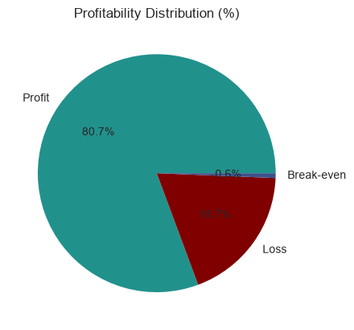
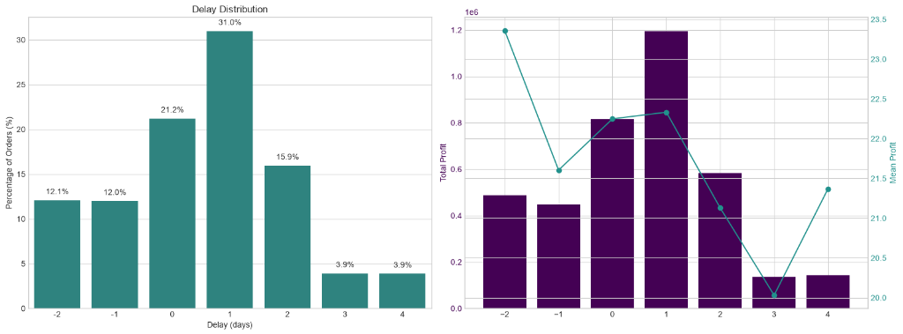
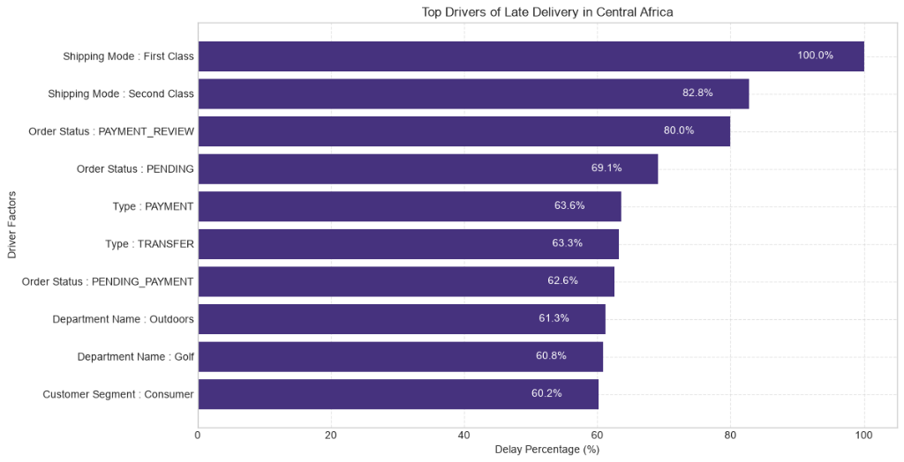
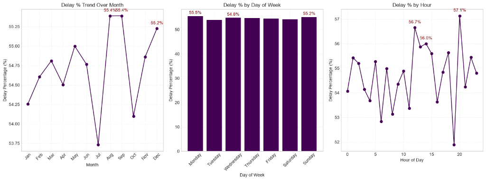
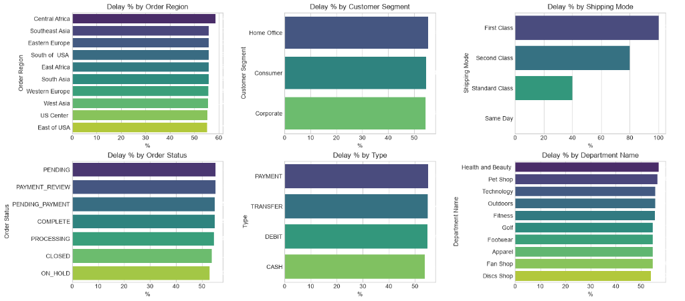

1. Supply Chain Analytics
Comprehensive delivery performance and profit impact analysis across 172,765 orders using the DataCo Supply Chain dataset in Python (Pandas, NumPy, Matplotlib, Seaborn) to measure fulfillment reliability, isolate root-cause bottlenecks, and test if delays hurt order profitability.
- Ingested and cleaned raw dataset of 180,519 rows × 53 columns, dropping 33 redundant/missing attributes and removing canceled shipments to analyze 172,765 non-cancelled orders.
- Engineered custom delivery & profit features in Python:
Order Processing Time,Delay (Processing Time − Scheduled Days),Is_Delayed (Delay > 0), and 3-tierProfitability Flag. - Benchmarked delay spreads across 6 dimensions (Shipping Mode, Region, Customer Segment, Order Status, Payment Type, Department) and time-series trends (month, weekday, hour), proving delays are structural rather than seasonal.
- Evaluated profitability vs. delay correlation: 80.7% profitable orders (139,354 orders generating >₹7.5M profit) with a stable per-order mean (₹20.0–₹23.4) across all delay buckets (−2 to +4 days), confirming delays impact customer experience/retention rather than unit margins.
Global e-commerce fulfillment faces severe delivery inconsistency where 54.7% of orders (94,523) ship later than scheduled, creating SLA breaches and customer churn risk.
Python ETL pipelines, feature engineering, IQR distribution modeling, time-based pattern analysis, and 6-dimensional categorical bottleneck detection.
Proved First Class orders (26.5K orders, 100% late) drive 28% of all delays; recommended recalibrating fulfillment promises to reduce late rate by 15.7 points.

1. Profitability Distribution (%)
80.7% profitable fulfillment vs. 18.7% loss-making shipments and 0.6% break-even orders.

2. Delay vs. Profitability Correlation
31.0% of orders experienced a 1-day delay generating $1.2M+ total profit with ~$22.3 mean profit per order.

3. Top Drivers of Late Delivery
100% of First Class and 82.8% of Second Class shipments encountered delay bottlenecks.

4. Temporal Delay Trends
Surfaced seasonal delay peaks in August/September (55.4%) and late-evening hour surges (57.1% at 20:00).

5. Multi-Dimensional Delay Breakdown Matrix
Comprehensive 6-way breakdown across Order Region (Central Africa leading at ~58%), Customer Segment, Shipping Mode, Order Status, Payment Type, and Department Name.